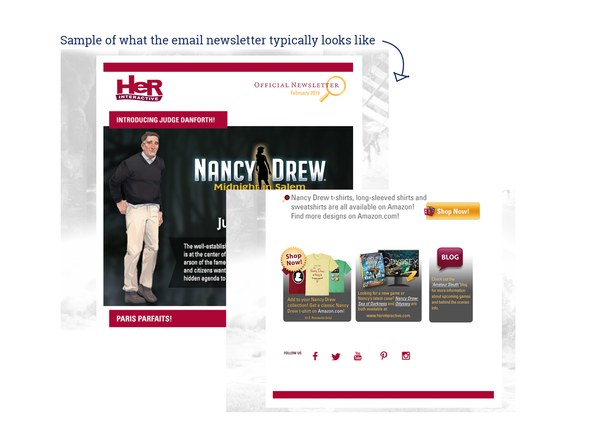
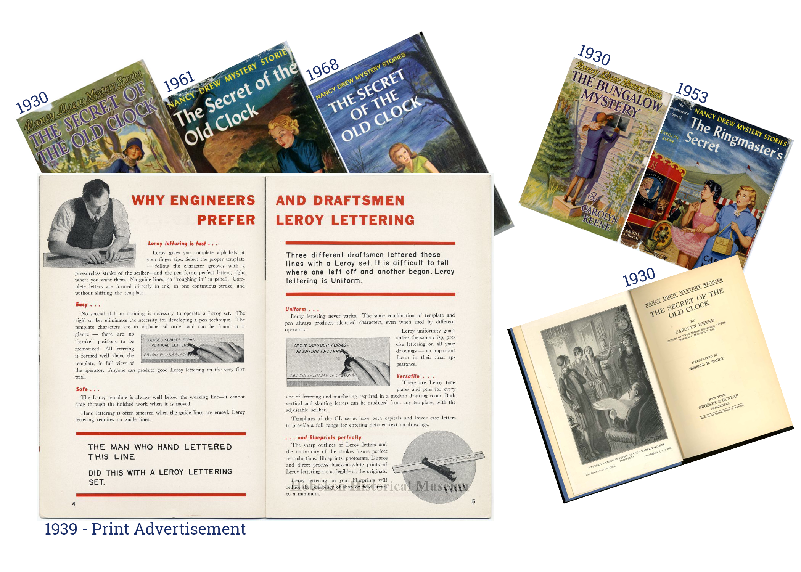
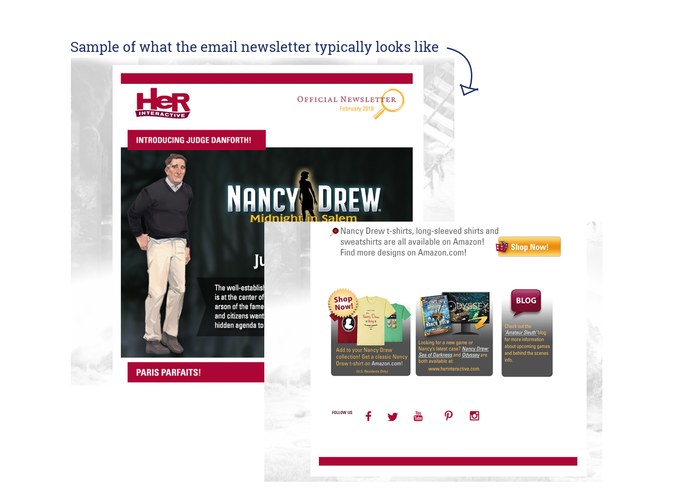
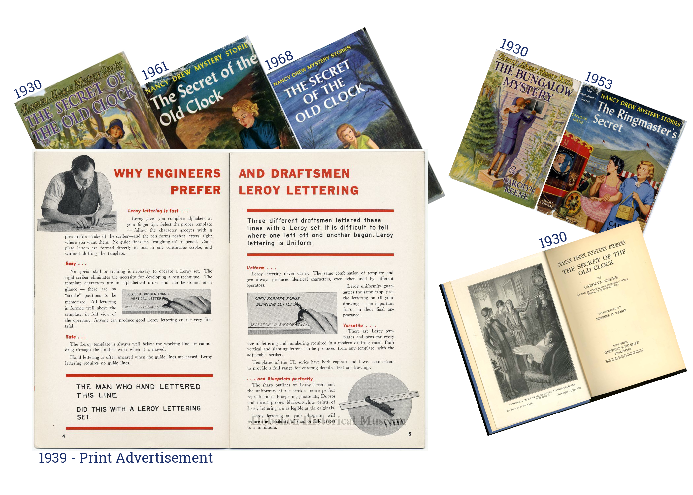

her interactive newsletter
i've been a big fan of the Nancy Drew book series for a long time, and i've played Her Interactive's Nancy Drew game series since i was little. but after years of rapid back-to-back releases, they have paused for a few years now to move to a new game engine and update the game's features.
i regularly receive their newsletter and thought it'd be fun to make a re-design of it that reflected the change for the company, especially as they advertise new pieces of the upcoming game. i decided to harken back to when the Nancy Drew books were originally written (1930's/1940's), but still keep it clean and relatively modern. i had a lot of fun with this one and i'm really proud of how it turned out!
to the left are a few of the sources i referenced while creating this design. they include the evolution of the Nancy Drew book series from various decades and a print of the advertisement from the 30's that i thought coincidentally called on the design accents of the original Her Interactive newsletter. however, i tried to keep in mind that Her Interactive originated as an effort to make games for girls and young women and that while the user base is now a greater range of ages, this is still their primary target. i wanted to modernize and stylize the design (up to the equivalent standards of social media that many girls and young women use) without making it feel too "mature" or "junior".
 


